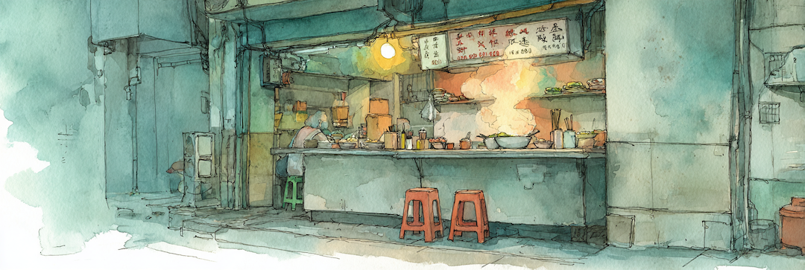
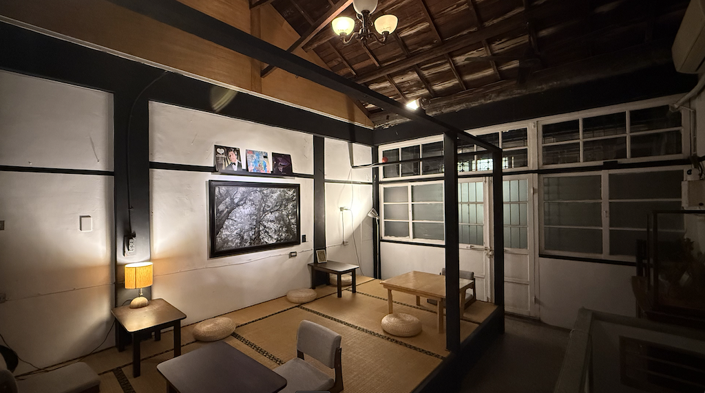

我在台南吃得起所有東西，這就是問題所在

清晨五點半，台南中西區。一碗特級溫體牛肉湯端上來的時候還在震動，湯面上飄著薑絲和蔥花。牛在幾個小時還在活著，當日屠殺，未經冷凍。這碗湯一百五十台幣，合四塊七五美金。
老闆娘的手沒有停過。切肉，燙肉，盛湯，遞碗，找零，下一位。她大概午夜就起來了。我坐在塑膠凳上，穿著昨天的衣服，剛從一間月租兩萬五台幣的文旅走過來。我吃得很慢。湯很鮮，牛肉入口即化。
一百五十台幣。我今天可以吃六碗這樣的湯，不會心疼。她賣六十碗，才剛覆蓋食材成本。
我來台南之前住在Austin。再之前是紐約。我的年收入大約是四萬美金，幾乎全部來自被動收入。我不需要工作，不是因為我賺得多，是因為我花得少。而我花得少，是因為我可以選擇在花得少的地方生活。
這是一種特權，雖然它看上去不像特權的樣子：沒有豪車。沒有名牌包。我穿著優衣庫，一個人坐在台南街頭喝牛肉湯，看起來和周圍的人沒什麼區別。
區別在退出鍵。我口袋裡有一本護照和一張信用卡。我隨時可以離開。坐在我對面喝同一碗湯的那個人，很可能不能。
台南的物價低，這不是秘密：一碗牛肉湯一百五十，一份虱目魚肚六十，一杯手搖三十五。你可以用五百台幣吃飽一整天。吃好，這是台南的名片。旅遊文章寫了無數遍：便宜，好吃，慢生活。
沒有人寫下一句：為什麼便宜？
台南的平均月薪大概三萬出頭。台北大約四萬九。差了將近兩萬。但物價的差距沒有兩萬那麼大——台南的房租是台北的一半，食物也許只便宜三分之一，日用品幾乎一樣。所以實際的處境是：這裡的人賺得少很多，但省下來的沒有那麼多。差額被吃掉了，被「便宜但沒有那麼便宜」的日常開銷吃掉了。
六個直轄市裡，台南的家戶年收入最低。不是墊底的那種「差一點」——是一百二十二萬對台北的一百八十萬。同一個國家，同一種貨幣，同一個健保系統。差了五十萬。五十萬台幣，大概是那個牛肉湯老闆娘一整年賣湯能存下來的錢。也許存不下來。
這個差距不是天生的。它是被造出來的。
2000年前後，台灣的實質薪資停止成長。GDP繼續漲，企業利潤繼續漲，但工資不動了。上市公司的營業利潤十幾年翻了兩倍，淨利翻了四倍，沒有一分錢流到薪資。勞動者分到的GDP佔比從百分之五十掉到百分之四十四。錢沒有消失。錢去了別的地方。
同一個時期，製造業外移。1992年，台灣百分之十二的製造在海外完成。2011年，超過一半。其中九成在中國。工廠走了，工作機會走了，但走不了的人還在。他們留在台南，留在嘉義，留在高雄的舊工業區，做服務業，做小吃，做那些無法外包到深圳的事情。
然後是NT$22000。
2009年，金融海嘯之後，政府推出一個方案：補貼企業每月22000僱用大學畢業生。這個數字的本意是地板——最低保障。但企業很快把它當成了天花板。方案結束之後，NT$22000留了下來，變成一整代年輕人的起薪共識。
在台北，你至少可以擠進科技業、金融業、跨國企業。薪水會漲，雖然漲得慢，但會漲。而在台南，世界被殘酷地切成了兩半。
一半是南科。台積電的三奈米和五奈米廠日夜運轉，三十歲的工程師領著三百萬年薪，把善化和新市的房價炒得比肩雙北。但另一半是舊城區，是我們所在的台南。這裡的經濟結構依然是中小型、代工型、利潤微薄的傳統製造業，以及剩下百分之三十五的服務業。小吃店，咖啡館，民宿。一個人能開的店。
台南便宜，是因為這裡的消費者付不起更高的價格，因為他們的工資被壓了二十年，因為工廠搬走了，因為政府把二萬二千塊當作一個可以接受的起點。更因為南科的財富沒有溢流到巷弄裡，它只在地產和數字上膨脹。
那個賣牛肉湯的老闆娘，她餵飽了剛下大夜班的工程師，但她永遠賺不到他們一個季度的分紅。她被物理性地留在了那個「便宜」的結界裡。
我的一百五十塊牛肉湯，是這整條鏈的末端。

我有一個朋友。台南鄉下長大。台南女中，台大法律，LSE、UPenn碩士，現在在新加坡讀MBA。
台南到新加坡的距離不是用公里算的。每一步都是她能邁的最大步幅。台南女中已經是台南鄉下能夠到的天花板。台大法律是台南女中能推她去的最遠的地方。然後LSE，UPenn，然後MBA。每一次都是拆掉上一個自己，重新造一個。
她為了到達我身邊一些人習以為常的起點，需要十五年、三個國家、兩次學科轉換、和一種普通人不需要具備的、近乎軍事化的自律。
她成功了。問題是為什麼成功需要這麼貴？
台灣南部的大學畢業生，百分之五十七留在南部工作，百分之二十三北漂。她不在這兩個數字裡面。她飛出去了。但她是例外。大部分人的選擇是：留下來，接受這裡的條件；或者北漂，去台北用更高的房租換一份稍微高一點的薪水。
不管哪個選項，退出鍵都不在自己手裡。

那家街角的咖啡第一次去是在深夜。中西區海安路旁邊一條安靜的巷子，老屋改的咖啡店，門口沒有惹眼的招牌——或者有，但不是那種想讓你進來的招牌。
店主二十六歲，嘉義人。一個人開，一個人住。店面在一樓，他睡二樓。營業時間下午一點到晚上十點，週末延到午夜。那天平日，沒什麼客人，他說本來打算提前關門出去喝酒，但我們進來了。
他的語氣裡沒有抱怨，更接近陳述。沒客人，就關門，出去喝酒。
我問他為什麼從嘉義來台南。他說這裡店租便宜，同樣的店舖在台北的租金是這裡的十倍。嘉義咖啡店太多了，水平又高，競爭激烈。台南的老城區還有空間。他說這些的時候很平淡，像在講天氣。
我問他為什麼開咖啡店。他說受不了上班，受不了跟別人共事。本來想過開早餐店，但那需要請人。咖啡店可以一個人撐。不是因為有多喜歡咖啡。是因為咖啡店的規模，剛好是一個人能做的事。
店裡的裝飾不像是買來的。牆上掛著木雕，架子上有一些半成品的樣子的東西。他說舅舅做木雕，他也認識搞藝術的朋友，這些都是他們的作品。放在這裡，不是展覽，就是放著。
我後來想，這家店的裝修邏輯就是他這個人的邏輯。不是設計出來的風格，是手邊有什麼就用什麼：舅舅的木雕，朋友的畫，老屋本來的磚牆。每一樣東西都是某段關係的副產品，但如果你問他，他大概不會用「關係」這個詞。他會說，就是剛好有。
第二次去是我從嘉義回來之後。
他在做賬。一本筆記本，攤在吧台上。他說要給姐姐看，因為自己會亂花錢。前陣子買了新衣服，結果沒錢跟家人去日本了。他講的時候帶著一點不好意思，但不是真的後悔，更像是一個早就認識自己的人在展示自我。
聊到嘉義，他的反應變得微妙。我說在嘉義吃了火雞肉飯，有人推薦了一家。他突然有點不高興——不是對我，是對那些隨便推薦火雞肉飯的嘉義人。那種不高興很具體，跟地方驕傲有關，跟「自己人都不認真對待自己的東西」有關。
聊到未來的計劃，他說想重新做吧台，目前空間太小，他也想安裝灶台開始做一些餐食。這一次他的語氣裡有真實的熱度，不是「夢想」那種大詞，是一個人站在自己的店裡環顧四周，覺得這裡可以再好一點的那種念頭。
但他也說過，錢夠自己花就行。
我不確定這兩句話是矛盾的。也許在他的世界裡，「夠花就行」和「想把吧台重做」之間沒有衝突。想做好跟想做大是兩件事。他想做好。他不想做大。做大意味著請人，意味著共事，意味著他要成為他逃離的那種東西。
他提到自己朋友不多，不太聯繫，也提到自己不太會說話。問過我一句：你覺得我是不是很難相處？
我沒有正面回答。但我看到的是：他一個人住在自己的店裡，下午開門，晚上關門，去附近的酒吧喝一杯——不是海安路那種商業化的夜店風，他對那些地方有一種安靜的不認同——然後回來，上二樓，睡覺。他喜歡一個人出門，一個人吃飯，一個人聽音樂。但有時候他會羨慕那種肝膽相照的朋友。不是常常。是需要的時候。
我離開他的店的時候在想一件事。
我來台南，是因為我負擔得起。他來台南，也是因為他負擔得起。我們做了一模一樣的計算——哪裡的成本更低，哪裡的空間更大，哪裡能用更少的錢過自己想要的生活。
差別是計算的量級。我在全球範圍內選城市。他在台灣南部選街區。我的退出鍵是一張機票。他的退出鍵是——我不確定他有退出鍵。他有一份租約，一張吧台，和樓上一張床。
他二十六歲。他逃離了公司，逃離了協作，逃離了嘉義的咖啡激戰區。他找到了一個他負擔得起的角落，然後把自己放進去。錢夠花就行。吧台以後再說。日本以後再說。
我四十歲不到。我逃離了紐約，逃離了科技業的時間表，逃離了那種「年薪五十萬但凌晨三點刷Blind」的焦慮。我找到了同一座城市，然後把自己放進來。
兩個人。同一座城。同一個詞：夠了。
除夕夜。普濟殿。我的頭頂是幾百盞手繪花燈。遠處有人在放煙火。
巷子兩邊是老磚牆，花燈懸在中間，煙火從縫隙裡炸開。光落下來，落在所有人臉上，一樣的光。
我站了很久。沒有在想結構。沒有在想特權。沒有在想誰的年收入是誰的幾倍。就只是站在那裡，和所有人一起，看燈。
然後那個念頭回來了。
這條巷子裡的每一盞燈都是有人畫的。每一聲煙火都是有人買的。這些人的年收入大概是美國平均收入的一半不到。他們今晚吃了年夜飯，出來放煙火，然後回去睡覺，明天繼續。
我站在他們中間，拿著手機，像一個遊客。
我就是一個遊客，只不過我住得久一點。
明天早上我還會去喝那碗牛肉湯。我還是會覺得好喝。
這就是問題所在。